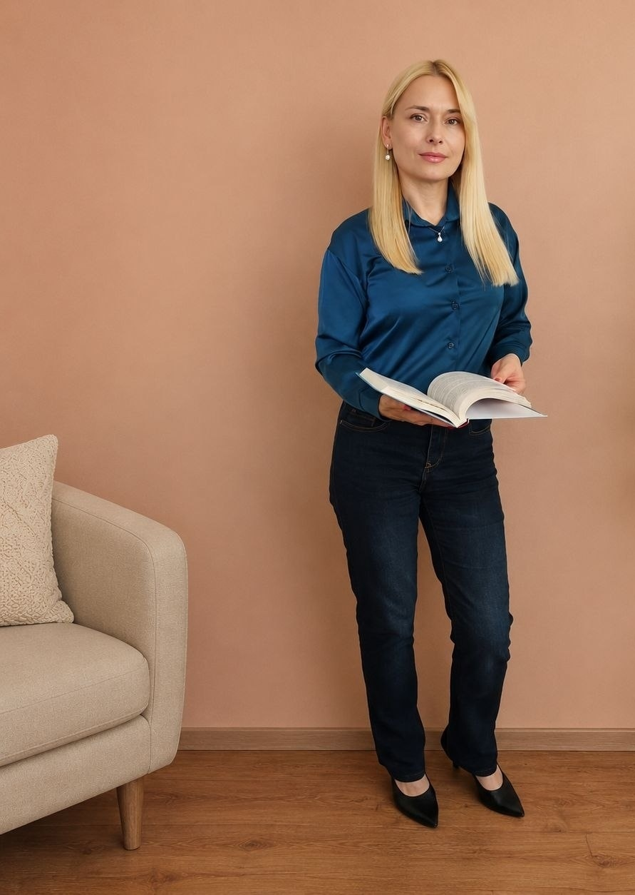

Диплом
Психология
Основное образование
Диплом психолога
Текст
Я Елена, дипломированный психолог. Бережно работаю с тревогой, выгоранием, кризисами, самооценкой и личными границами. В индивидуальной работе использую метод КПТ.

Иногда внешне всё «нормально», но внутри становится слишком тяжело. На консультации мы спокойно разбираемся в том, что происходит, и ищем вашу собственную опору.
Понимание механизмов тревоги и поиск способов справляться с ней более устойчиво.
Когда сил мало, а привычное «надо» больше не помогает.
Поддержка в период жизненных переходов, неопределённости и внутренних изменений.
Работа с самокритикой, сомнениями и ощущением собственной недостаточности.
Учимся замечать свои потребности и выстраивать отношения без постоянного чувства вины.
Разбираем конфликты, молчание, напряжение и то, что трудно сказать словами.

Приветствую! Меня зовут Елена, я дипломированный психолог. В своей практике использую метод когнитивно-поведенческой терапии (КПТ) при индивидуальном консультировании, а в работе с группами интегрирую арт-терапию и МАК.
За моими плечами диплом психолога, диплом лингвиста и 18 лет руководящей практики в режиме многозадачности и высокой ответственности. Долгие годы я управляла международными проектами, вела переговоры, решала конфликты и организовывала международные конференции и форумы.
18 лет дипломатии научили меня главному: за каждым резким словом может стоять страх, за молчанием — боль, а за конфликтом — невысказанная потребность. Так я вернулась к своему первому образованию — психологии, уже с большим управленческим и жизненным опытом.
Я знаю, как звучит усталость, когда человек говорит «всё нормально», и как выглядит тревога, замаскированная под контроль. Я мама и жена уже 20 лет и знаю, что кризисы можно проходить с терпением, юмором, разговором, паузой или действием.
Арт-терапия — это психотерапия через творчество, возможность замедлиться, услышать себя и отпустить лишнее.
Для тех, кто хочет попробовать арт-терапию, получить интересный опыт, общение и поддержку.
Девичник, день рождения или душевная встреча с друзьями. Соберите свою компанию — я организую индивидуальную сессию.

В работе для меня важны профессиональная база, постоянное развитие и честное понимание границ своей компетенции.
Текст
Текст
Текст
Текст
Текст
Текст
Международные проекты, переговоры, работа с конфликтами, высокая ответственность и многозадачность — опыт, который сегодня помогает мне лучше понимать взрослых людей и их жизненные ситуации.
В кабинете можно говорить на любые темы без страха осуждения, критики или обесценивания. Я честна в своих возможностях, методах и границах компетенции.
Можно говорить о сложном без страха осуждения и обесценивания.
Ваша история защищена, всё, что происходит в кабинете, остаётся в кабинете.
Я не вторгаюсь туда, куда вы пока не готовы.
Никаких навязанных советов и указаний — ваш темп и ваши решения.
Если запрос выходит за пределы моей компетенции, я скажу об этом прямо.
Информация о клиенте и содержании сессий не разглашается третьим лицам, кроме предусмотренных законом случаев.
Создаю условия для открытого разговора без критики и осуждения.
Помогаю клиенту найти собственные решения, а не решаю за него.
Работаю в рамках образования и опыта; при необходимости направляю к другому специалисту.
Отвечаю за качество своей работы, но не за решения и жизнь клиента вне кабинета.
Индивидуальные консультации проходят офлайн в Минске. Продолжительность одной встречи — 50 минут.
Если вам откликается мой подход, оставьте контакты. Я свяжусь с вами, чтобы уточнить запрос и удобное время встречи.
Когда кажется, что у близкого человека уже всё есть, можно подарить опыт, который останется в памяти. Сертификат на арт-терапию — это возможность остановиться, почувствовать себя и провести время в безопасной обстановке.
Узнать о сертификате